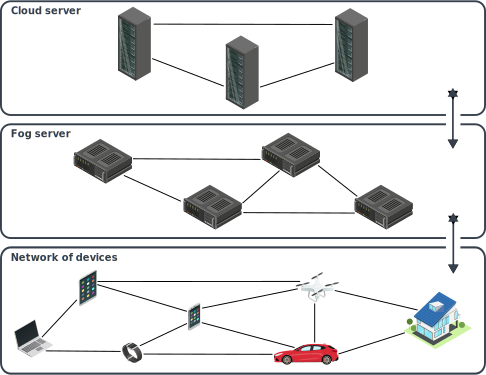
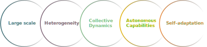
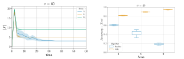
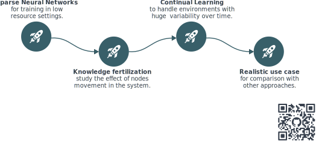

Towards Self-Adaptive Cooperative Learning in Collective Systems
Davide Domini, PhD student
International Conference on Autonomic Computing and Self-Organazing Systems @ DOCTORAL SYMPOSIUM ACSOS 2024
Scenario

Motivation
Computing devices are more and more ubiquitous in every day life, enabling lots of potential applications,
such as: crowd monitoring, smart surveillance, air quality monitoring, and many more.

Challenges
These system are complex, engineering collective behaviors is a non trivial task
Laws put more constraints, for instance GDPR in europe for privacy
Heterogeneity emerges both in the devices and the data generated by them
Methodology
Identify learning paradigms that well adapt to our scenario
Identify key challenges in Federated Learning and Collective Systems
through a literature review
Design of custom Federated Learning algorithms based on macroprogramming
(in particular, aggregate computing) abstractions
Federated Learning

Reduces privacy concerns
Single point of failure
Need for a central trusted entity
Heterogeneity

No single point of failure
No need for a central trusted entity
Communication overhead
Heterogeneity
Why Aggregate Computing?
Self-org computational model
Interaction: repeated neighbors message exchange
Behavior: repeated execution with async rounds
Collective abstraction: computational fields ($dev \rightarrow \mathbb{V}$)
Computation expressed as a composition of functions over fields
Preliminary results
Field-based Coordination for Federated Learning[1]
Goals:
Implement peer-to-peer FL through AC abstractions and perform a
comparison with centralized FL under IID data
Implement clustered FL with AC using only geographical proximity
based policies
[2] Domini D., Farabegoli N, Aguzzi G., Viroli M., Esterle L. "Proximity-based Self-Federated Learning." ACSOS 2024.
Proximity-based Self-Federated Learning[2]
Goals:
Improve clustering process to self-adapt to different data distributions
and network topologies
Extend the previous work to integrate smarter similarity metrics
[2] Domini D., Farabegoli N., Aguzzi G., Viroli M., Esterle L. "Proximity-based Self-Federated Learning." ACSOS 2024.

What’s next?
